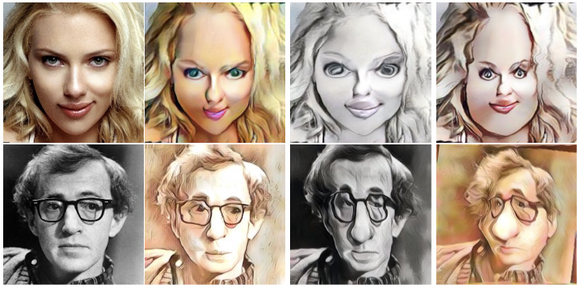
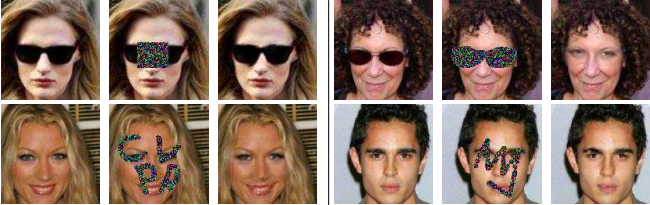

Collaging Class-specific GANs for Semantic Image Synthesis
Collaging Class-specific GANs for Semantic Image Synthesis
Yuheng Li, Yijun Li, Jingwan Lu, Eli Shechtman, Yong Jae Lee, Krishna Kumar Singh
IEEE International Conference on Computer Vision (ICCV), 2021
Project Paper
【HOME】
Motion Inversion for Video Customization
Luozhou Wang, Guibao Shen, Yixun Liang, Xin Tao, Pengfei Wan, Di Zhang, Yijun Li, Ying-Cong Chen
Preprint, 2024
Project Paper Code
Decompose and Realign: Tackling Condition Misalignment in Text-to-Image Diffusion Models
Luozhou Wang, Guibao Shen, Wenhang Ge, Guangyong Chen, Yijun Li, Ying-Cong Chen
Preprint, 2023
Project Paper Code
Separate-and-Enhance: Compositional Finetuning for Text-to-Image Diffusion Models
Zhipeng Bao, Yijun Li, Krishna Kumar Singh, Yu-Xiong Wang, Martial Hebert
ACM Transactions on Graphics (SIGGRAPH), 2024
Project Paper
AT-EDM: Attention-Driven Training-Free Efficiency Enhancement of Diffusion Models
Hongjie Wang, Difan Liu, Yan Kang, Yijun Li, Zhe Lin, Niraj K. Jha, Yuchen Liu
IEEE Conference on Computer Vision and Pattern Recognition (CVPR), 2024
Project Paper
MAGICK: A Large-scale Captioned Dataset from Matting Generated Images using Chroma Keying
Ryan D. Burgert, Brian L. Price, Jason Kuen, Yijun Li, Michael S. Ryoo
IEEE Conference on Computer Vision and Pattern Recognition (CVPR), 2024
Project Paper
Consistent Multimodal Generation via A Unified GAN Framework
Zhen Zhu, Yijun Li, Weijie Lyu, Krishna Kumar Singh, Zhixin Shu, Sören Pirk, Derek Hoiem
IEEE Winter Conference on Applications of Computer Vision (WACV), 2024
Paper
Cross-modal Latent Space Alignment for Image to Avatar Translation
Manuel Ladron de Guevara, Jose Echevarria, Yijun Li, Yannick Hold-Geoffroy, Cameron Smith, Daichi Ito
IEEE International Conference on Computer Vision (ICCV), 2023
Paper Supplementary
Zero-shot Image-to-Image Translation
Gaurav Parmar, Krishna Kumar Singh, Richard Zhang, Yijun Li, Jingwan Lu, Jun-Yan Zhu
ACM Transactions on Graphics (SIGGRAPH), 2023
Project Paper Code
Contrastive Learning for Diverse Disentangled Foreground Generation
Yuheng Li, Yijun Li, Jingwan Lu, Eli Shechtman, Yong Jae Lee, Krishna Kumar Singh
European Conference on Computer Vision (ECCV), 2022
Paper
3D-FM GAN: Towards 3D-Controllable Face Manipulation
Yuchen Liu, Zhixin Shu, Yijun Li, Zhe Lin, Richard Zhang, S.Y. Kung
European Conference on Computer Vision (ECCV), 2022
Project Paper
Spatially-Adaptive Multilayer Selection for GAN Inversion and Editing
Gaurav Parmar, Yijun Li, Jingwan Lu, Richard Zhang, Jun-Yan Zhu, Krishna Kumar Singh
IEEE Conference on Computer Vision and Pattern Recognition (CVPR), 2022
Project Paper Code
Collaging Class-specific GANs for Semantic Image Synthesis
Yuheng Li, Yijun Li, Jingwan Lu, Eli Shechtman, Yong Jae Lee, Krishna Kumar Singh
IEEE International Conference on Computer Vision (ICCV), 2021
Project Paper
 Learning to Caricature via Semantic Shape Transform
Wenqing Chu, Wei-Chih Hung, Yi-Hsuan Tsai, Yu-Ting Chang, Yijun Li, Deng Cai, Ming-Hsuan Yang
International Journal of Computer Vision (IJCV), 2021
Paper Code
Few-shot Image Generation via Cross-domain Correspondence
Utkarsh Ojha, Yijun Li, Jingwan Lu, Alexei A. Efros, Yong Jae Lee, Eli Shechtman, Richard Zhang
IEEE Conference on Computer Vision and Pattern Recognition (CVPR), 2021
Project Paper Code
 Rethinking and Improving the Robustness of Image Style Transfer
Rethinking and Improving the Robustness of Image Style Transfer
Oral Best Paper Candidate
Pei Wang, Yijun Li, Nuno Vasconcelos
IEEE Conference on Computer Vision and Pattern Recognition (CVPR), 2021
Paper Code
 IMAGINE: Image Synthesis by Image-Guided Model Inversion
IMAGINE: Image Synthesis by Image-Guided Model Inversion
Pei Wang, Yijun Li, Krishna Kumar Singh, Jingwan Lu, Nuno Vasconcelos
IEEE Conference on Computer Vision and Pattern Recognition (CVPR), 2021
Paper
Content-Aware GAN Compression
Yuchen Liu, Zhixin Shu, Yijun Li, Zhe Lin, Federico Perazzi, S.Y. Kung
IEEE Conference on Computer Vision and Pattern Recognition (CVPR), 2021
Project Paper Code
Controllable and Progressive Image Extrapolation
Yijun Li, Lu Jiang, Ming-Hsuan Yang
IEEE Winter Conference on Applications of Computer Vision (WACV), 2021
Paper
Few-shot Image Generation with Elastic Weight Consolidation
Yijun Li, Richard Zhang, Jingwan Lu, Eli Shechtman
Advances in Neural Information Processing Systems (NeurIPS), 2020
Project Paper Supplemental
Modeling Artistic Workflows for Image Generation and Editing
Hung-Yu Tseng, Matthew Fisher, Jingwan Lu, Yijun Li, Vladimir Kim, Ming-Hsuan Yang
European Conference on Computer Vision (ECCV), 2020
Paper Code
Collaborative Distillation for Ultra-Resolution Universal Style Transfer
Huan Wang, Yijun Li, Yuehai Wang, Haoji Hu, Ming-Hsuan Yang
IEEE Conference on Computer Vision and Pattern Recognition (CVPR), 2020
Paper Code
 Fast Video Multi-Style Transfer
Fast Video Multi-Style Transfer
Wei Gao, Yijun Li, Yihang Yin, Ming-Hsuan Yang
IEEE Winter Conference on Applications of Computer Vision (WACV), 2020
Paper Code
Im2Pencil: Controllable Pencil Illustration from Photographs
Yijun Li, Chen Fang, Aaron Hertzmann, Eli Shechtman, Ming-Hsuan Yang
IEEE Conference on Computer Vision and Pattern Recognition (CVPR), 2019
Paper Code
Joint Image Filtering with Deep Convolutional Networks
Yijun Li, Jia-Bin Huang, Narendra Ahuja, Ming-Hsuan Yang
IEEE Transactions on Pattern Analysis and Machine Intelligence (TPAMI), 2018
Paper Code
A Closed-form Solution to Photorealistic Image Stylization
Yijun Li, Ming-Yu Liu, Xueting Li, Ming-Hsuan Yang, Jan Kautz
European Conference on Computer Vision (ECCV), 2018
Paper Code (11k stars)
Flow-Grounded Spatial-Temporal Video Prediction from Still Images
Yijun Li, Chen Fang, Jimei Yang, Zhaowen Wang, Xin Lu, Ming-Hsuan Yang
European Conference on Computer Vision (ECCV), 2018
Paper Code
Universal Style Transfer via Feature Transforms
Yijun Li, Chen Fang, Jimei Yang, Zhaowen Wang, Xin Lu, Ming-Hsuan Yang
Advances in Neural Information Processing Systems (NIPS), 2017
Paper Code Two Minute Papers
 Diversified Texture Synthesis with Feed-forward Networks
Diversified Texture Synthesis with Feed-forward Networks
Spotlight
Yijun Li, Chen Fang, Jimei Yang, Zhaowen Wang, Xin Lu, Ming-Hsuan Yang
IEEE Conference on Computer Vision and Pattern Recognition (CVPR), 2017
Paper Code Project
 Generative Face Completion
Yijun Li, Sifei Liu, Jimei Yang, Ming-Hsuan Yang
IEEE Conference on Computer Vision and Pattern Recognition (CVPR), 2017
Paper Code Project
Deep Joint Image Filtering
Yijun Li, Jia-Bin Huang, Narendra Ahuja, Ming-Hsuan Yang
European Conference on Computer Vision (ECCV), 2016
Paper Code Project
Efficient Saliency-Model-Guided Visual Co-Saliency Detection
Yijun Li, Keren Fu, Zhi Liu, Jie Yang
IEEE Signal Processing Letters (SPL), 2015
Paper Code